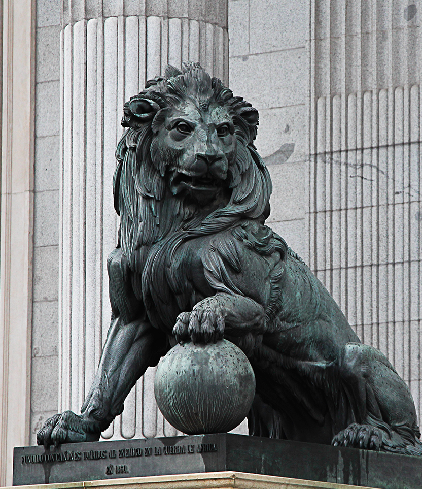
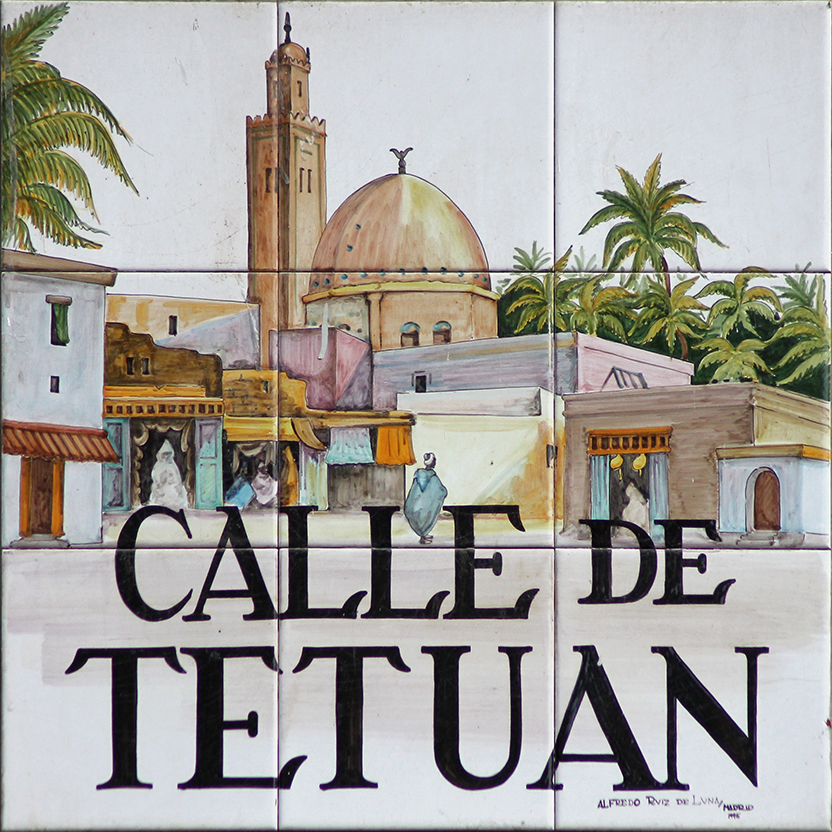
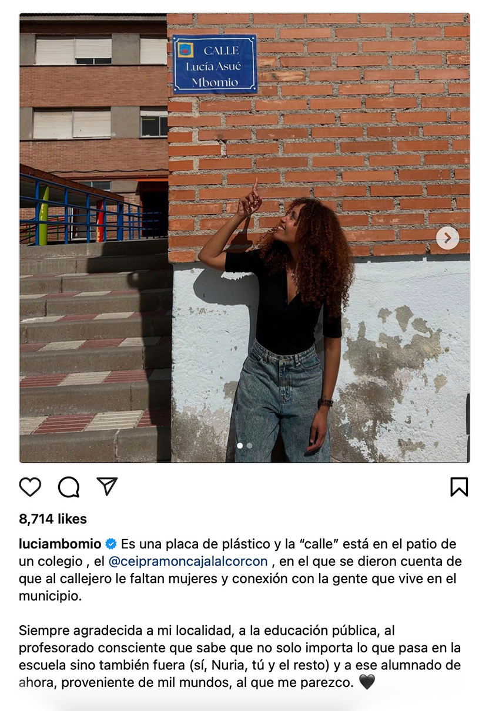
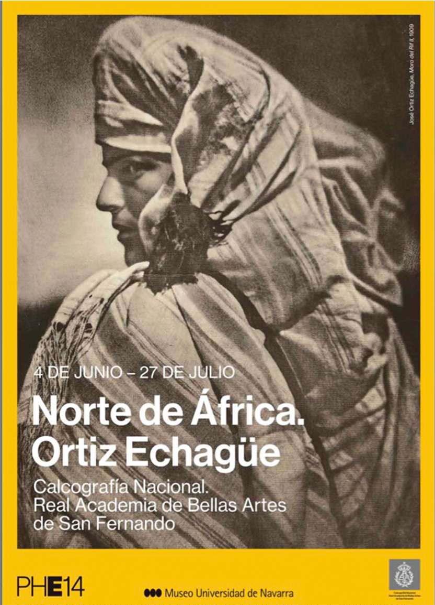
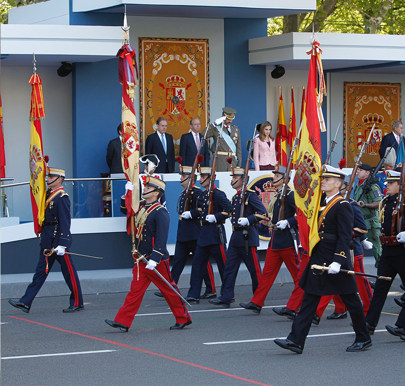
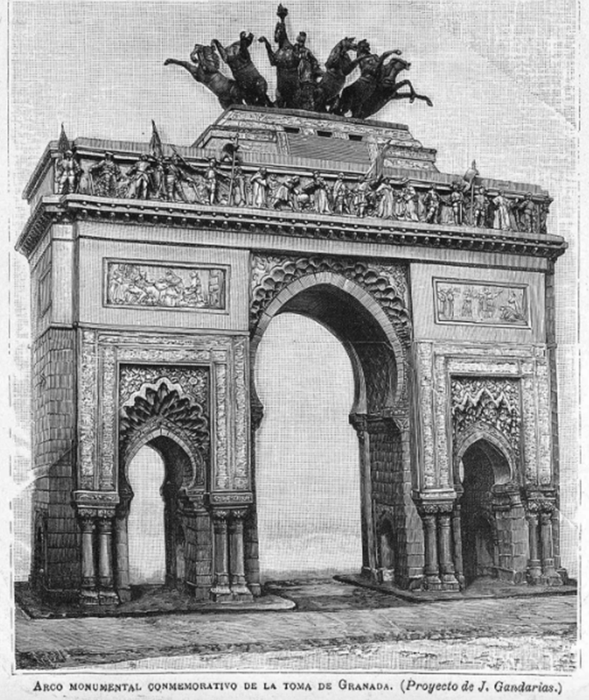
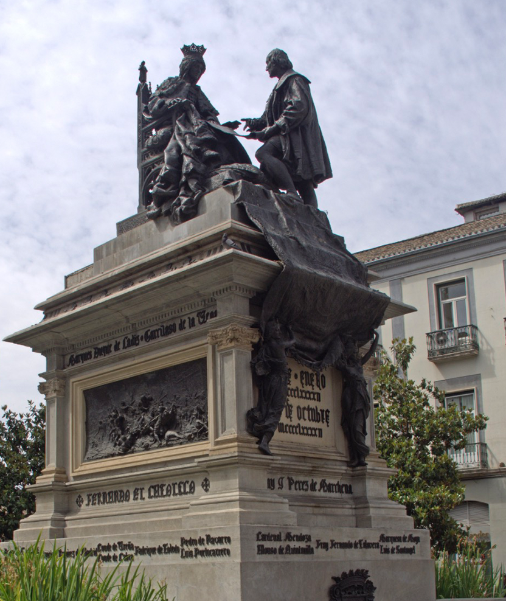

Cargando — El pasado colonial de España en el norte de África: Un proyecto de memoria histórica
La historia tiene importancia más allá de los libros y las aulas. Tiene mucho que ver con la identidad, con las formas en las que la sociedad se define de cara al futuro además del pasado. Por lo tanto, creemos que, además de los profesores, los políticos, etc., vosotros deberíais participar en el proceso de construir la memoria histórica.
En los siguientes minutos veremos una serie de fuentes primarias de la Guerra del Rif que comentaremos juntos: fotografías, artículos de prensa, entrevistas con testigos de la guerra, y una novela.
La memoria histórica son las formas que tiene una sociedad de recordar acontecimientos o personas importantes en su historia. Puede ser una estatua, el nombre de las calles, una exposición, un congreso, un acto público. Influye en cómo una sociedad se entiende a sí misma y se relaciona con su presente y futuro.

Este azulejo, en el centro de Madrid, conmemora la victoria española en la Batalla de Tetuán de 1860.

Esta placa recuerda a la escritora Lucía Asué Abalo Bomio, antigua alumna.

Este cartel anuncia una exposicion del fotografo Fernando Ortiz Echagüe (1886-1980)., quien sirvió en la Guerra del Norte de África. Celebra su obra artistica.
En 1903 Ortiz ingresó en la Academia de Ingenieros Militares de Guadalajara y tras ello sirvió en la Guerra del Norte de África. Obtuvo los carnés de piloto de globos y de aviación en 1911. En 1923 regresó a España y fundó Construcciones Aeronáuticas. En 1950 creó Seat, la primera industria española de fabricación de automóviles en cadena. Abandonó la fotografía tras perder la vista a los 87 años.

El desfile militar del Día Nacional (12 de octubre) celebra el día en que Colón llegó a América.

En 1892 el gobierno español organizó un concurso para elegir un monumento para conmemorar el aniversario de 400 años desde la llegada de Colón a América. Este monumento estaba destinado a la ciudad de Granada.
Esta era una propuesta para el monumento, diseñada por un arquitecto llamado Justo Gandarias. Un arco casi tan grande como el Arco de Triumfo de Paris con una mezcla de estilos arquitectónicos y decorativos aztecas, hispanoárabes (ver los arcos), y europeos (renacentistas). Un monumento así hubiera incorporado las identidades diversas que forman la historia de España. Pero al final no eligieron este diseño.

El monumento que gano el premio fue el Monumento del IV Centenario.

En grupos, preparad una propuesta para un monumento, evento, exposición, festival u otro objeto de memoria histórica sobre el pasado colonial de España en el norte de África.